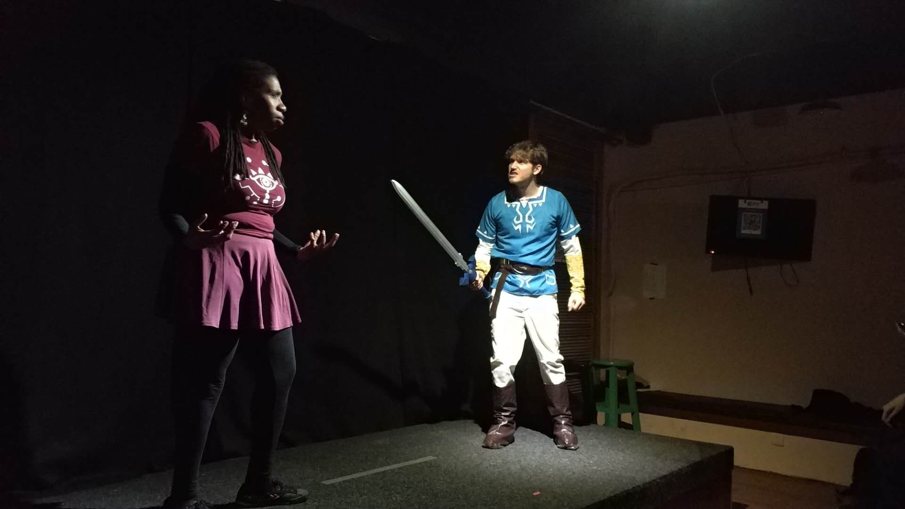
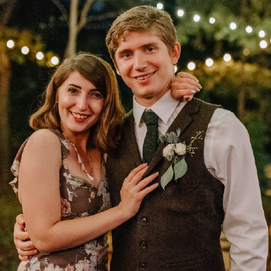

Hi! My name is Zachary William Bernard Danz 武松, but I generally just go by "Zach".
I was born in Dallas, TX in 1991 to two very kind and loving parents. I grew up as a normal Dallas-Suburb kid. Throughout high school, I was passionate about spending time playing role-playing games with my friends and theatrical performance.
In 2009, I graduated from high school and began to obtain a BA in Theatre Arts from a small private university in San Antonio, Texas, University of the Incarnate Word. In my third year at the Univeristy, I had the opportunity to study abroad and had the chance to really open my mind up about the world, and my desire to explore it. By the time I graduated in 2013, I was ready to burst out and see what I could find.
Shortly thereafter, I moved to a small Chinese city of 7 million people, Yantai, China where I spent a year as an English teacher. Fascinated by China, its culture and people, in 2014 I moved to Shanghai, China where I lived for five years. While there, I acquired mastery over Mandarin Chinese and officially passed the HSK Level 6 Exam, the highest Chinese proficiency test a foreigner can take. Living abroad is a life-altering experience. China really helped to mold me into the person I am today.
While there, I worked various different jobs after teaching English. I worked as a professional actor in China, tought ran workshops on emotional intelligence, translated text for video games, and became a key member of Zmack, a large international improvisational theatre troupe. I also completed a masters degree at the Shanghai Theatre Academy in Intercultural Communications Studies, where I published my thesis about Applied Improvisation.
While in China, I met Nurtaç Türkeli, the love of my life. Together, we've traveled across many different countries across Asia and the rest of the world. We became engaged in April of this year. With Nurtaç's encouragement, I am learning to speak Turkish with her and her family. Nurtaç has her own YouTube channel. Check it out and subscribe!
Looking for my next adventure, my brother, a UX Designer, gave me the advice to consider finding a job in tech. Currently I am in the process of making that transition, learning key skills like html, CSS, Java, Python and more.
Stay tuned to watch my portfolio grow.